Figures
Figures, ready to view and download
Click a picture for the full-size file. PDF and SVG are vector. PNGs of the paper figures are 600 dpi.
Main paper
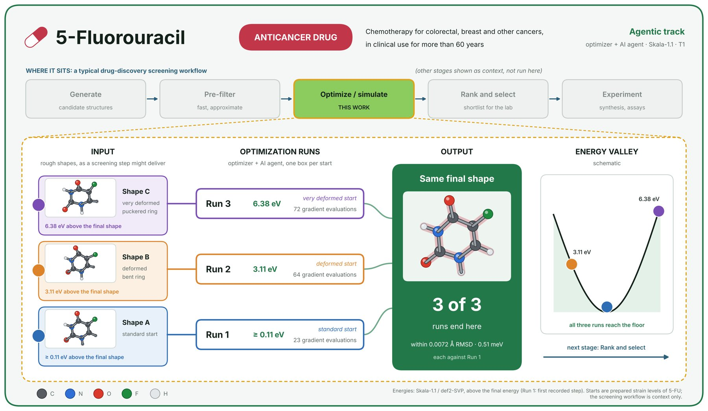
Figure 1 · The set-up. Where the test sits in a typical screening workflow (context only), the three starts, the three Module 1 runs and the one final shape. Energies: Skala-1.1 / def2-SVP, above the final energy.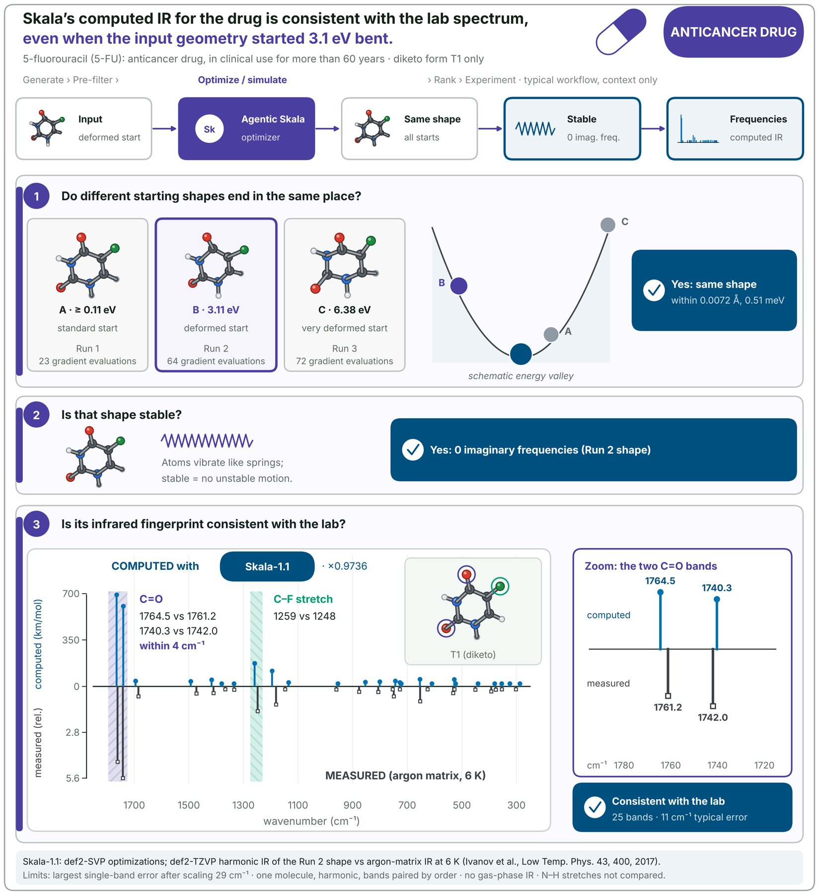
Figure 2 · The result. Same shape from every start; a stable shape (0 imaginary frequencies, Run 2 shape); an infrared fingerprint consistent with the argon-matrix spectrum (25 bands, 11 cm⁻¹ typical error after one scale factor).Appendix
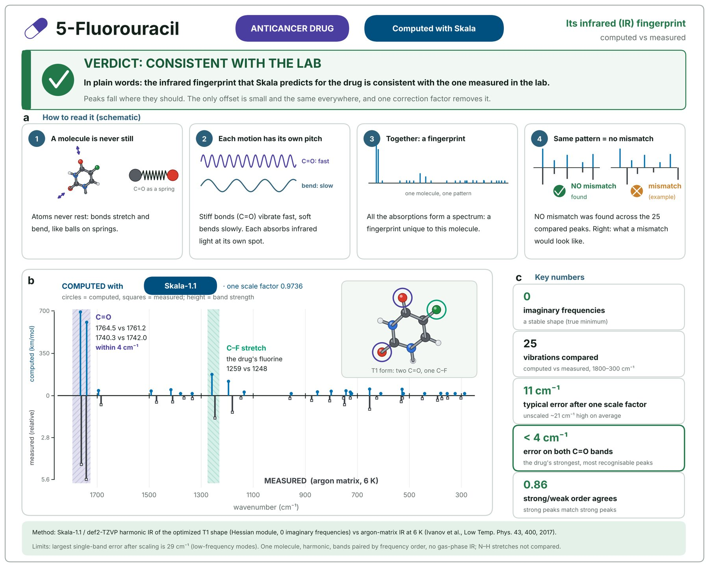
Appendix · IR fingerprint, broad-audience version. How to read a spectrum, the computed and measured bands, and the key numbers.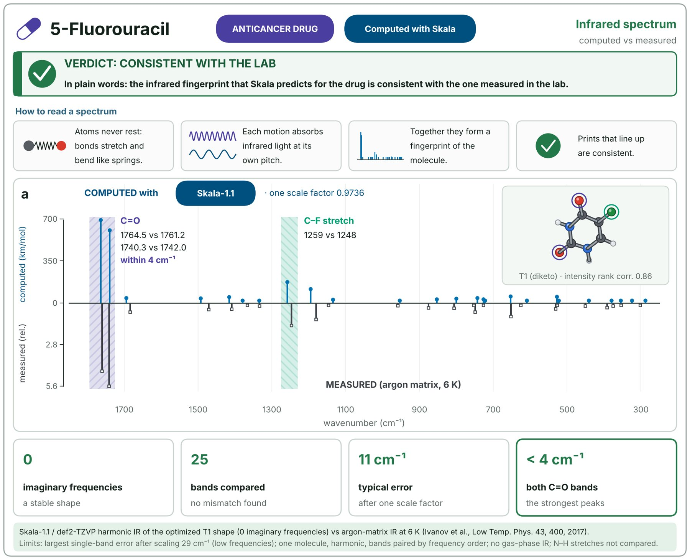
Appendix · IR detail. Spectrum and key numbers.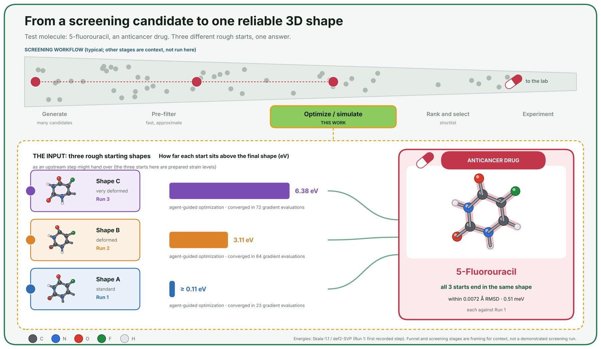
Appendix · Set-up, alternative layout. Supplement · inside the vibrations
Built from the saved Module 2 forces, with no new calculations. The scripts are in code/figure_scripts .
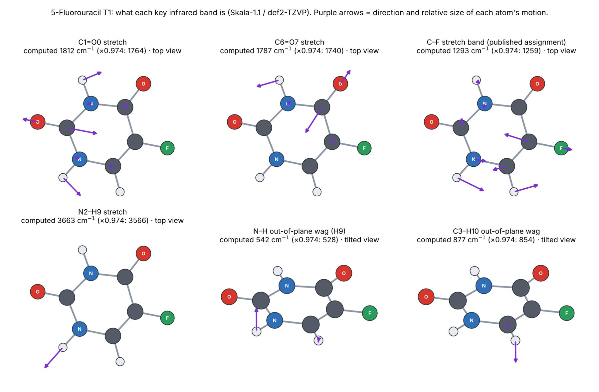
Mode arrows. How the atoms move in six key bands.
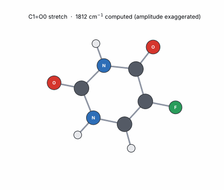
C=O stretch (1812 cm⁻¹ unscaled) 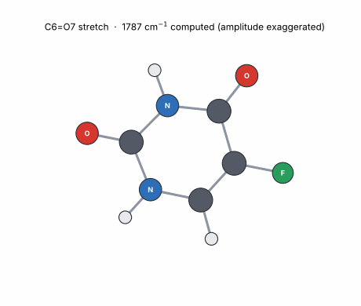
second C=O stretch (1787) C–F stretch (1293) C–H wag (877) N–H wag (542) 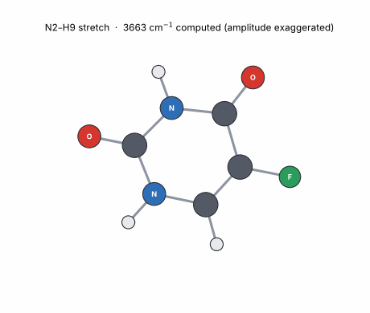
N–H stretch (3663, not compared)
Animations exaggerate the amplitude and assume harmonic motion. Wavenumbers here are unscaled.
Projected vibrational density of states. Which elements take part in which vibrations (mass-weighted shares, 18 cm⁻¹ broadening).Hessian map. The 36 × 36 matrix of spring constants, an atom-pair coupling map, and the symmetry and translation checks.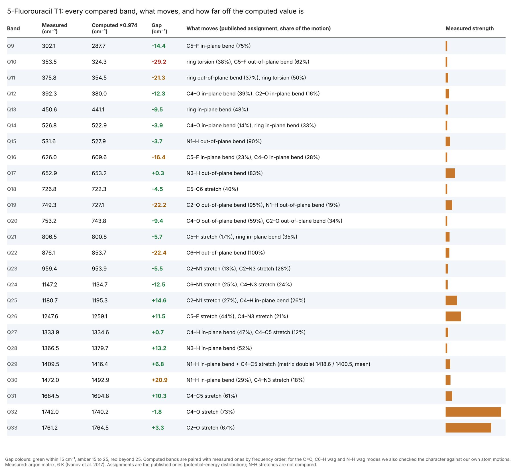
Band table. The 25 compared bands with the published assignment and the gap.Raw run plots
Diagnostic plots written by the notebooks during the runs, unedited.
Run 2: force and energy per gradient, with agent decisions marked. 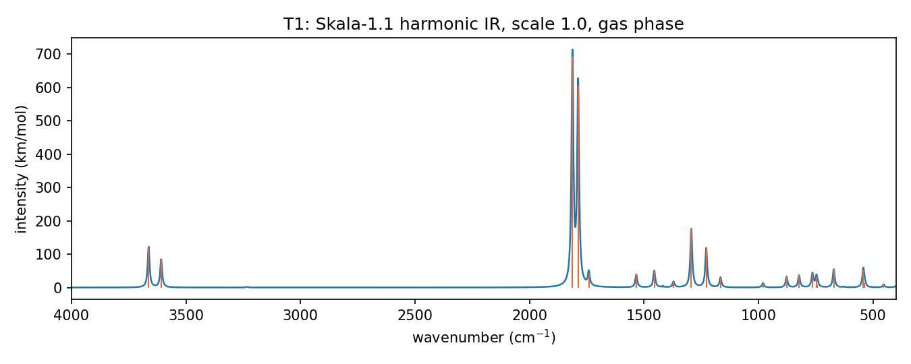
Module 2: raw computed spectrum (unscaled).